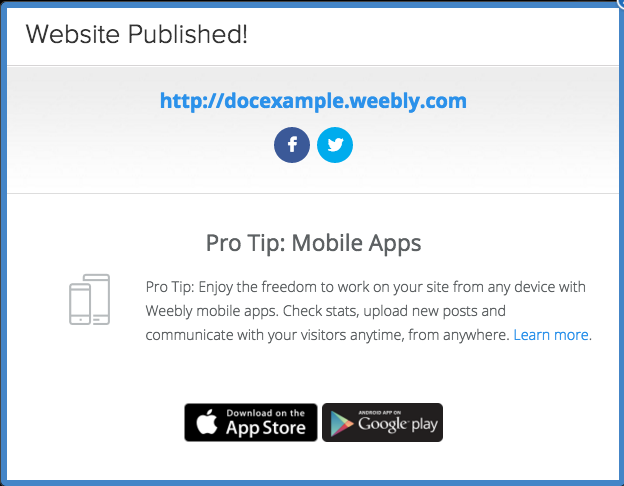
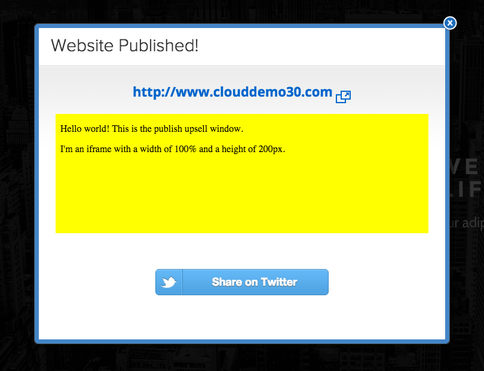
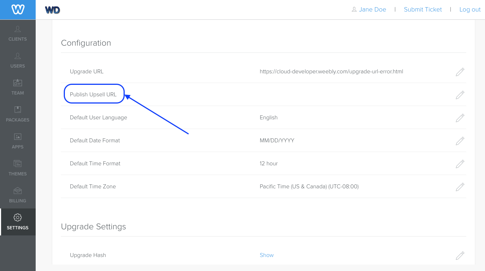

When a user publishes their site, the Weebly Editor displays a modal. You can customize this modal window by supplying a URL to other content.
About the Publish Modal
When a user publishes a site, the Weebly editor displays a publishing modal. It displays a link to the site just published, and often Weebly displays promotional material as well.

Publish modal in the Weebly Editor
You can use this modal window to advertise your own services by setting the publish_upsell_url to a URL where you have content published. That content loads in an iframe (640px W by 200px H) when a site is published. Here’s an example of custom content in the modal (the yellow background is for demonstration purposes only).

Custom content in the Publish modal
Customize the Publish Modal
Before you can configure Weebly Cloud to use custom content in the Publish modal, you need to create it on a site that can be accessed. You set the URL in the Cloud Admin.
To set the URL in the Cloud Admin:
Create your custom content at a URL that can be accessed by the modal.
From the Settings page of the Cloud Admin, in the Configuration area, click the Edit icon for the Upsell URL.

Upsell URL on the Settings page in the Cloud Admin